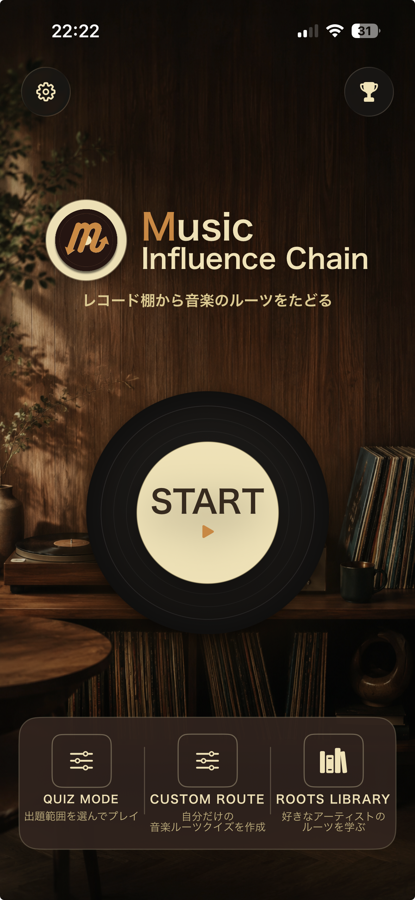
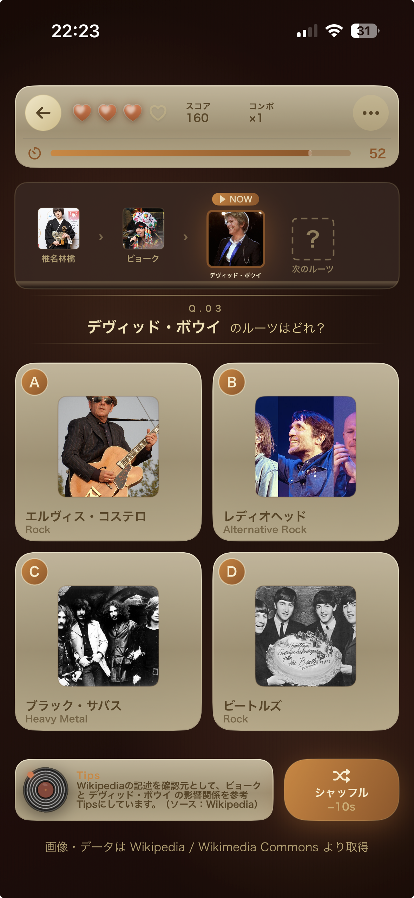
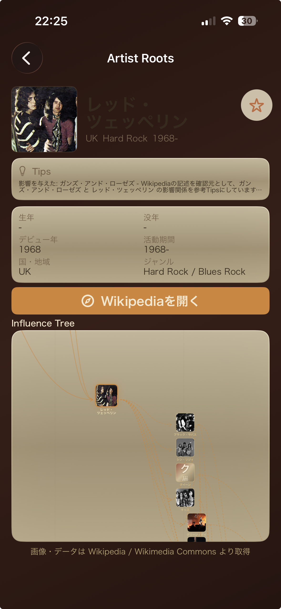

レコード棚から音楽のルーツをたどる Trace the roots of music, one record at a time
アーティスト同士の「影響の連鎖」をたどる音楽クイズ。Wikipedia をもとに、好きな一枚から音楽史の源流へさかのぼります。 A music quiz that follows the chain of influence between artists. Powered by Wikipedia, it lets you start from a record you love and travel back to the source of music history.

音楽は、つながっている。 All music is connected.
あなたの好きなアーティストには、影響を受けた誰かがいて、その誰かにもまた源流がある。Music Influence Chain は、その「影響の連鎖」をたどっていく音楽クイズアプリです。 Every artist you love was shaped by someone before them — and that someone had roots too. Music Influence Chain is a music quiz app for tracing those chains of influence, link by link.
出題は Wikipedia / Wikimedia Commons の記述をもとに構成。クイズを解きながら、ジャンルや時代を越えてアーティストがどうつながっているのかが自然と見えてきます。 Questions are built from descriptions on Wikipedia and Wikimedia Commons. As you play, you start to see how artists connect across genres and eras — naturally, without studying.
温かなローズウッドの世界観と、回るレコードの手触り。気軽に遊べて、音楽の聴き方が少し変わる。そんな一本です。 Wrapped in a warm rosewood world and the tactile feel of a spinning record, it's easy to pick up — and it just might change how you listen to music.
気分に合わせて、ルーツのたどり方を選べます。 Pick how you want to trace the roots, depending on your mood.
出題範囲を選んでプレイ。制限時間とライフのなかで、アーティストのルーツを当てていきます。 Choose a category and play. Race against the clock and your lives to guess each artist's roots.
自分だけの音楽ルーツクイズを作成。好きなアーティストを起点に、オリジナルの連鎖を組み立てられます。 Build your own music-roots quiz. Start from any artist you like and assemble your own chain of influence.
好きなアーティストのルーツを学ぶ。影響の樹形図（Influence Tree）で、つながりをじっくり眺められます。 Study the roots of your favourite artists. Explore the connections at your own pace with the Influence Tree.
STARTを押して、レコードに針を落とすだけ。 Hit START and drop the needle — that's it.
いま「再生中」のアーティストが表示されます。次にたどるべきルーツはどれ？ The artist that's "now playing" is shown. Which one are their roots?
4つの候補から、影響を与えたアーティストを選択。Tips がそっと背中を押します。 Pick the artist who influenced them from four candidates. Tips give you a gentle nudge.
正解するほど影響の連鎖が長くのびる。スコアとコンボを重ねて源流をめざそう。 Each correct answer extends the chain. Stack up score and combos as you reach for the source.


アプリへのご感想、不具合のご報告、収録してほしいアーティストのリクエストなど、お気軽にお寄せください。 We'd love to hear your impressions, bug reports, or requests for artists you'd like to see added.
お問い合わせフォームへ Open the contact form